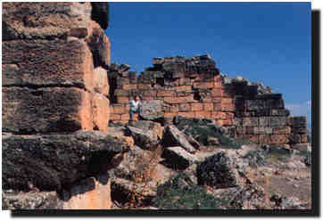

|
 Denizli il merkezinin 40 km kuzeyindedir. Buldan ilçesi Yenicekent kasabasýnýn doðusunda, Büyük Menderes akarsuyu ile kasaba arasýndaki yamaçlar üzerinde kurulmuþtur. Tripolis, Lidya bölgesi kentleri içinde Karya ve Frigya bölgelerine ulaþýmý saðlayan, sýnýr, ticaret ve tarým merkezlerinden birisidir. Kuruluþ biçimi ve kent anlayýþý ile yörenin en zengin kentlerindendir. Tripolis'in Lidyalýlar tarafýndan kurulduðu tahmin edilmektedir. Lidya, Pers ve Hellenistik dönemlere ait tarihi bilgiler henüz yoktur. Anýtsal yapýlarýn en iyi örnekleri MS I., II. ve III. yüzyýlýada yapýlmýþlardýr. Plinius'a göre kentin bir diðer adý Apolonia'dýr. Sikkelerinde Tanrýça Leto'nun, Letoia phthia oyunlarýnýn ve Menderes akarsuyunun isimleri vardýr. Tripolis ve çevresi tarih içinde birçok deprem ve savaþlara sahne olmuþtur. MS 325 yýlýnda Nikea meclisinde hazýr bulunan Lidya piskoposlarý listesinde Tripolis'in adýnýn geçmesi piskoposluk düzeyinde bir kent olduðunu göstermektedir. Tripolis'in Yapýlarý: Tiyatro:Kent merkezindedir. Grek tiyatrosu þeklinde arazive uygun olarak Roma inþa tarzýnda yapýlmýþtýr. Tüm bölümleri harap durumdadýr. Yaklaþýk 10.000 kiþi alabilecek kapasitededir. Hamam:Tiyatronun yaklaþýk 200 m batýsýnda yer almaktadýr. Sur duvarlarýlarý yýkýlmýþtýr. Bölümleri ise tespit edilebilmektedir. Kent Binasý:Hamamýn 150 m güneyindedir. Sadece temelleri kalmýþtýr. Kale ve Surlar:Tripolis Geç Roma ve Bizans döneminde sur ve kale ile çevrilmiþtir. Eðimli arazide kurulan kentin surlarý yer yer burçlarla, gözetleme kuleleri ve kalýn duvarlarla desteklenmiþtir. Tiyatroya bitiþik devam eden sur, kentin kuzeyindeki en yüksek tepede kule ile birleþir. Nekropol:Surun, doðu ve güney yamaçlarýndadýr. Burada kaya mezarlarý, podyumlu mezarlar ve lahitler görülmektedir. |